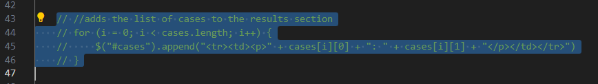
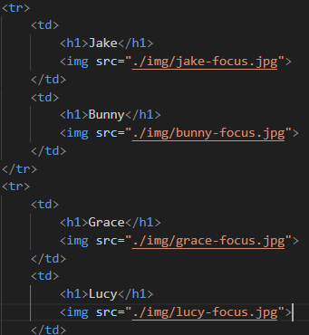

Lab 14 - Debugging, Tools & Strategies
Challenge
Go back through your site and clean up problems you find.
Problems
I didn't run into many problems in fixing my code. The main challenge was just scouring back through everything to find what I could.
Reflection
This was a very relaxed lab for me since I didn't have much I had to do, but I'm glad I caught the little things I did. I also helped Chad finish his lab 13
Results
This is less of a bug-fix and more just going back and improving some code. Originally, it was a set of if-else conditionals that would hard lock the number of grids to 1, 3, or 5, but this new logic lets the number shift more naturally. upCheck is a fucntion I made that just runs the code you put in it every millisecond. If there's a better way to have code in JS check repeatedly, let me know. upCheck is a pretty haphazard way.
I forgot to remove some code from when I originally used HTML tables to organize the grid instead of CSS's grid display, which is kind of funny seeing as I had already used grids to the same effect for my photography page.
Finally got around to actually adding the photos of my cats I've been sitting on for a while now.